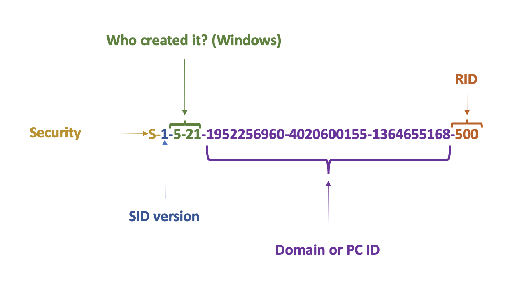
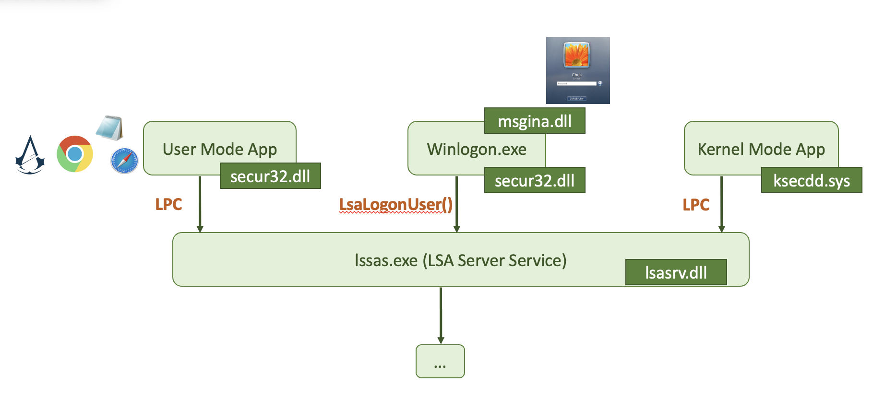
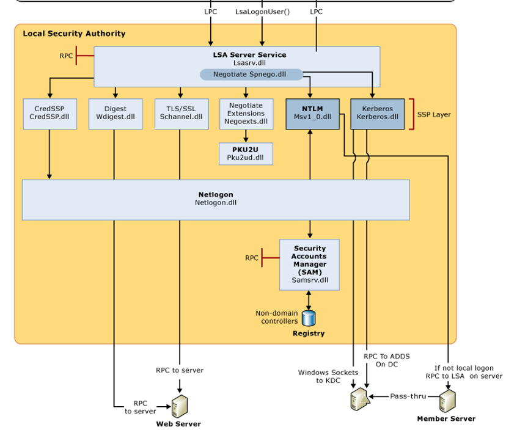
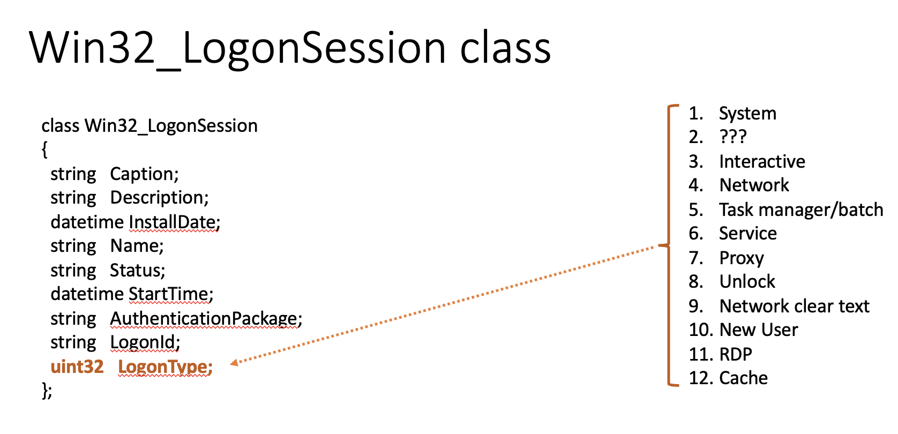
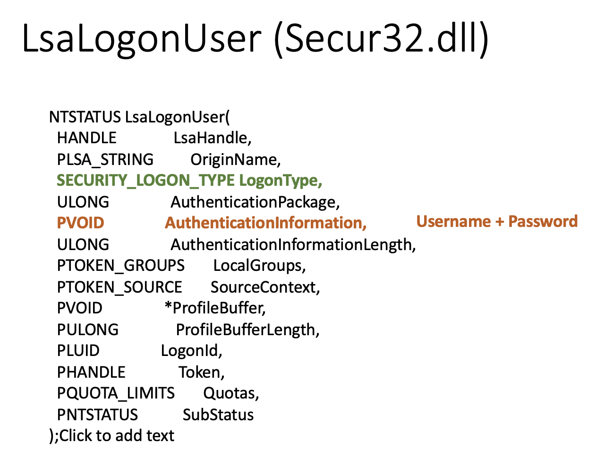

To carry out nearly any action on a system, one requires an account, which is typically safeguarded by passwords or other credentials. Hence, it is crucial to understand why attackers exhibit such a strong interest in acquiring them.
SID
Below is the structure of a SID. SID, shortly speaking, is a user id. The actual ID of the user is the RID (relative identifier) part.

In case Who created it? aka issuing authority ends with number 21, a trailing SID will represent PC or domain identifier (purple in the picture above). 1 - revision number, 5 - issuing authority, 21 - sub-issuing authority.
Here the most common SIDs you will see in the wild:

❗️Built-in accounts don’t have a Unique domain identifier and RID.
To get a user’s SID:
wmic useraccount where name='veronicazvereva' get sid # or
whoami /user # for current user
PC/domain ID can be viewed in SAM\SAM\Domains\Accounts, value V, last 12 bytes of the data chunk:

In order to translate this value, split the hex 12 byte value into three 4 byte chunks. Since these are little-endian, reverse the order of the bytes, convert each to decimal If this is a negative value, something is not right. It’s a 32-bit unsigned value! For example, in the below picture we see that the machine id is 2d 48 f4 b4 1a b1 b8 73 f1 2a 8a a3. Splitting into 3 chunks gives us: 2d 48 f4 b4, 1a b1 b8 73 and f1 2a 8a a3. Lets now convert each to little-endian: b4 f4 48 2d, 73, b8, b1, 1a and a3 8a 2a f1. Now, each set of 4 bytes in decimal: 3035908141, 1941483802, 2743741169. The resulting machine ID part of the SID is then: 3035908141-1941483802-2743741169. Let’s check in PowerShell:

In the picture above with the registry window, the green square 🟩 shows the RIDs in hex. Given the RID, one can deduce something about the user, since some users have predefined RIDs:
S-1-5-21-X-X-X-500- default adminS-1-5-21-X-X-X-501- default guestS-1-5-21-X-X-X-1000- the first user created on a Windows 7 and below,S-1-5-21-X-X-X-1001- for newer systemsS-1-5-18- SystemS-1-5-3- batchS-1-5-2- networkS-1-5-21-544- local admin group
The previous picture shows that the RID is 1000, meaning it’s the first user account (surprisingly not 1001 since it’s a Windows 10 machine).
Accounts
Local Admin (RID NOT 500)
❗️This is not the same as the built-in admin account on every Windows system with RID
500.
❗️The use of a local admin account with a single password that grants remote access to all machines within an enterprise is considered a well-known vulnerability.
Local User Accounts
For each user there will be a separate sub-key under SAM\SAM\Domains\Account\Users. The sub-keys names are actually RID of the user in hex. Each sub-key will have several values. Record V contains static information (username, password length etc), while record F contains constantly updated information like timestamps 🕰:
- Last login is a little endian 8 byte value at
0x08-0x0foffset. - Last password change time at offset
0x18-0x1f, 8 bytes long. - Last failed logon time is at offset
0x28-0x2f, 8 bytes.
RID itself is stored in F record at offset 0x30-0x33 (little endian). Also, there is PasswordRequired (at 0x38). There several possible values for this nibble (half byte): 0 - account active + pass required, 1 - account is not active, 4 - any policies do not apply to this account.
🧪 I have
5on my machine, what does it mean?
Logon count is at 0x42-0x43 (two bytes).
The V value is more interesting. It contains usernames and hashes (NTLM). The user account name is at 0x1C0 offset (Unicode). What about the juicy stuff? I mean the password hashes. SAM file contains a 56-byte NTLM hash of the password, which is encrypted with an AES algo, the key 🔑 is stored in a system file. You’ll need both SAM and the system file to decrypt the password. Password cracking methodology:
- Export SAM and SYSTEM hives from the forensic image/suspect machine.
- Unencrypt the hash stored in the SAM file (🛠
mimikatz). - Create a word list from the current case (may export from Autopsy, EnCase etc).
- Run a dictionary 📖 or brute-force attack 💪 against this NTLM hash (🛠:
hashcat🐈⬛ ,John the Ripper🔪, Cain and Able 🔪 🐏).
# decrypt the hashes:
mimikatz
> lsadump::sam /system:"path_to_SYSTEM" /SAM:"path_to_SAM"
# crach the hash with hashcat
Other values are stored in this sub-key. ForcePasswordReset speaks for itself, and SupplementalCredentials do not. There also can be a UserPasswordHint, which sometimes contains the actual password.
Microsoft Accounts
Since Win8. Can be logged in if there is internet access. Profiles and settings are stored in the cloud ☁️. Additional values are stored in SAM: InternetUID and InternetUserName. Both are unique to the user. InternetUID is a 16 byte Unicode string. InternetUserName - usually an email used as a login.
Domain Accounts
Key 🔑 : Software\Microsoft\Windows NT\CurrentVersion\ProfileList.
The key above will have a ProfileImagePath.
⚠️ SAM doesn’t have any informaiton about domain accounts! See more info in software section, domain accounts.
Deleted Accounts
🛠 Registry Explorer (Eric Zimmerman’s tool) shows deleted accounts. If the data was not overwritten, we will be able to get the information.
C:\Windows\System32\Config
Default Accounts
Default local user account:
- Administrator
- Guest
- HelpAssistant
- DefaultAccount
Default system accounts (not visible for the user):
- SYSTEM
- NETWORK SERVICE
- LOCAL SEVICE
There are two main places within the registry that contains that information: SAM hive for local and Microsoft accounts and Software\Microsoft\Windows NT\CurrentVersion\ProfileList for Domain Accounts.
❗️❗️❗️❗️ More details see here.
To crack Windows NTLM hashes (for local accounts only), you’ll need both SYSTEM and SAM hives. SYSTEM contains an AES key 🔑 for NTLM decryption and SAM contains the encrypted hash. After the hash is decrypted, either brute-force 💪 or dictionary 📖 attack needs.
Xbox on later versions is a built-in game center. It also contains some information about the user (if he uses it for fames): C:\Users\%Username%\AppData\Local\LocalState\ModelManager\Xboxlivegamer.xml (user profile).
Also, collect DPAPI master user and system keys: https://www.youtube.com/watch?v=vA4qa0uWRHU.
\Users\%username%\
\Users\%username%\Desktop
\Users\%username%\Documents
\Users\%username%\Downloads
🗝️ Clear Text Creds
🗝️ Tokens
With tokens, one can pretend to be someone else. This is how SSO works. These tokens have some attributes assigned to them. Some attributes, like SeImpersonate, let one process access the context or tokens of another process.
Each logon and process in the system has a token. This token determines what privileges this fellow has. This token consists of:
- User SID
- Group SID
- Integrity level (mandatory label). Vista+/WinServer 2008+. This label determines the process’s privileges based on the assigned accesses and groups.
- Logon session SID
- Token type (primary or impersonation)
- Impersonation level
- User privileges list
- Other
Checks:
- What is your mandatory label❓
- Compare this label to the object’s label.
- Take User and Group SIDs of the process and ACL of the object in question.
🗝️ LM and NT Hashes
LM (⛔️ deprecated)
LM hashes were used a long time ago and were very weak. They used DES and the following algorithm to secure a password.
# Step 0. The length is at most 14 characters long
password = password[0:14]
# Step 1. Convert all characters to uppercase
password = upper(password)
pwd_len = len(all_caps)
hash = list(all_caps)
# Step 2. pad with 0s if the length is less than 14
for i in range(14-pwd_len): hash.append('0')
# Step 3. Split the password into two strings, each consisting of seven characters, and encrypt both parts individually.
first_part = encrypt_des(hash[0:7])
second_part = encrypt_des(hash[7:len(all_caps)])
# Step 4. Return a concatenated string.
return first_part + second_part
The root cause of the vulnerability in the LM hash is the practice of padding the password with a known value (0s) and encrypting the two parts separately. This vulnerability becomes evident when the password length is equal to or less than 7 characters. In such cases, the second part of the string will always be the same value: AAD3B435B51404EE. As a result, passwords with a length of 7 characters or less are easier to crack due to this predictable pattern. One would need a rainbow table to do that.
NTLM
DES + MD4 until SP3
NTLMv2
MD5 [username][sids][LM][NTLM]
❗️LM hash is not generated if the password length is less than 15. ❗️Passwords are not salted.
❗️It is advisable not to utilize CredSSP on machines running an operating system older than Windows 8 when using batch scripts, as CredSSP caches credentials on remote systems. Additionally, CredSSP sends credentials over the network, making it vulnerable to Man-in-the-Middle (MiM) attacks.
Each process, file or any other object has a set of requirements. For some process to get access, it needs to fulfil these requirements. At the same time, these processes have passports or tickets 🎫 which they can use to get something or somewhere. Requirements are called security descriptors; these “passports” are called access tokens. More information about both can be found here and here.
Access tokens can have the following information (not limited):
- (SID) for the user’s account or/and a group and their privileges
- ID for current logon session - logon SID
- Owner SID
- The source of the access token
- Primary or impersonalisation token?
- Integrity level
Security Descriptors also have a set of fields in it:
- Integrity level
- SID of the owner or group
- DACL (list of users allowed and what they can do)
- SACL (list of access attempts that will generate alerts ⚠️)
🗝️ Tickets
Kerberos tickets are valid for 10 hours and stored in RAM. For more info on Kerberos and its abuse, see the article in attacks -> protocols section.
🛠️ Mimikatz, 🛠️ WCE, 🛠️ kerberoast
📕 RTFM
mimikatz > privilege::debug
mimikatz > kerberos::ptt [ticket]
mimikatz > exit
klist # see the cache
🏺 LSA Secrets
🏺 SECURITY\Policy\Secrets - each key has its own registry 🔑 key. To decode them, use SECURITY\Policy 🔑 key. To finally decrypt - SYSTEM hive is needed. The attacker needs 👑 admin or higher privileges to access these keys 🔑.
🛠️ Nishang, Get-LsaSecret.ps1 to dump and decrypt secrets.
📕 RTFM
Enable-DuplicateToken # to get access to SECURITY hive by setting the token it's using to the same value as LSASS has.
Get-LsaSecret
🏺 Cache
🏺 SECURITY\Cache (requires 👑 to access). These credentials are in mscash2 format (persists indefinitely). Use 🛠️ creddump to extract hashes from the hive (offline).
❗️Can’t be used in pass-the-hash attacks because they are salted and encrypted.
By default, up to 25 hashes can be stored in the cache when someone logs in interactively. But how many hashes would be on a typical workstation? Hardly even 10. Attackers hope something interesting is left there.
🏺 SAM
File path 🛣️: C:\Windows\System32\config\SAM.
⚠️ This file cannot be edited through the RegEdit unless the admin grants you permissions (data marked with red are not accessible unless the admin grants access):

However, this file can be accessed on a dead-box system. ⚠️ Also, this file only stores local creds, not domain or Microsoft account credentials!
SAM is a database of files, and it stores all the information about all the users: login information, password hashes, and group information.
🛠 Registry Explorer (Eric Zimmerman’s tool) can collect all users from the SAM and Profile files and show them assembled. This data can be exported to Excel, for example.
🏺 Local Security Authority Subsystem (LSA)
Single Sign-on. LSA is its part. Responsible for authentication and authorisation. Manages derived credentials (NTLM, Kerberos tickets, sessions, hashes etc). The image file is located at %WINDIR%\System32.
🛠 https://github.com/D1rkMtr/DumpThatLSASS
Login Process
This is what a general picture looked like before Windows Vista came into play:

msgina.dll is used to handle the login process. Starting from Windows Vista, the msgine.dll was deprecated.
If you want a more thorough picture to examine:

Login Types
Win32_LogonSession class is used in Windows API to handle login, depending on the type.

📝
0.-1. - Not documented, but can occur in the wild.1- system logon?
- Console logon (keyboard, server KVM, VNC)
- Network logon (SMB, some RDP)
- Batch logon. This is used when a scheduled task initiates the logon.
- Windows service logon (aka daemons in the UNIX world)
- Proxy: This is not widely used, and is typically only used for “non-trusted” scenarios.
- Creds used to lock and unlock the screen, RDP reconnect
- Network logon with cleartext creds. This is typically associated with web-based logons.
- Creds used != creds for logon. This logon type signifies that the
RunAscommand was used with the/netonlyswitch. The user is logging on to a system different from the one that was initially logged on to. - RDP
- Cached creds. This logon occurs when a user logs on using cached credentials, typically when the domain controller is unavailable or when a laptop user is off the network.
- Cached remote interactive (~ 10). This type of logon occurs when a user logs on with cached credentials to a remote system via RDP.
- Cached unlock (~ 7). This logon occurs when a user unlocks a workstation using cached credentials.
📝 The primary benefit of NLA is that it can protect systems from being exposed to malicious users or software right upon connection. It does so by adding an extra layer of authentication at the start of the Remote Desktop Connection (RDC), before the login screen appears.
As you can see from the picture, uint32 LogonType can be set to either of the 12 values. Types Console login and RunAs when using type 2, Remote Desktop when logging with type 10, PsExec alternate creds when used in combination of 3 and 2 logon types, Remote Scheduled Task using the 4th logon type and Run as a Service using the 5th logon types all store credentials on the target.
LsaLogonUser class from secur32.dll is also a struct participating in the login process. As you can see from the picture, pvoid AuthenticationInformation is the field carrying the username and password.

🏺 TsPkg and Wdigest
❗️
TsPkgandWDigestcan be decrypted to retrieve plaintext passwords.
TsPkg (Terminal Services Package): TsPkg is a security package used in Microsoft Windows operating systems. It is part of the authentication process for Remote Desktop Services (formerly known as Terminal Services). TsPkg is responsible for negotiating and exchanging credentials between the client and the server during the remote desktop session initiation.
Wdigest: Wdigest is a Windows security package that handles storing and retrieving user credentials (such as usernames and passwords) for Windows authentication. It was primarily used in older versions of Windows, including Windows 7 and earlier. Wdigest stored user passwords in a less secure format than newer authentication protocols. As a result, it became a target for potential security vulnerabilities, leading to its deprecation in later versions of Windows. WDigest.dll was introduced in the Windows XP operating system The Digest Authentication protocol is designed for use with Hypertext Transfer Protocol (HTTP) and Simple Authentication Security Layer (SASL) exchanges, as documented in RFCs 2617 and 2831.”
To prevent WDigest credentials from being stored in memory, a Group Policy setting can be applied to the UseLogonCredential registry entry under the following subkey:
HKEY_LOCAL_MACHINE\System\CurrentControlSet\Control\SecurityProviders\WDigest
- If the
UseLogonCredentialvalue is set to0,WDigestwill not store credentials in memory. - If the
UseLogonCredentialvalue is set to1,WDigestwill store credentials in memory.
🏺 LiveSSD
It is derived from the Windows Live cloud accounts.
🏺 NTDS.DIT
🏺 \%SystemRoot%\NTDS. If the file is not here, check 🔑 HKLM\SYSTEM\CurrecntControlSet\Services\NTDS\Parameters to see where it’s stored. To access this key, use ntdsutil or another tool to get raw access to the disk or get Volume Shadow copy with 🛠️ VSSAdmin.
You need 👑 to load a drive to access the raw disk or use Volume Shadow copy. Active Directory database stored encrypted passwords for all the domain accounts along with the password history. NTDS.DIT is in ESE format.
🛠️ VSSAdmin (to get Volume Shadow copy), 🛠️ NTDSXtract, 🛠️ Metasploit, 🛠️ PowerShell, 🛠️ secretsdump.py (impacket), 🛠️ Bloodhound (looks a lot like a threat modelling tool). 🛠️ Bloodhound uses LDAP and is quite stealthy. 🛠️ GoFetch uses Bloodhound to create a graph and then uses Invoke-Mimikatz and Invoke-Psexec and 🛠️ DeathStar, which uses 🛠️ PowerShell Empire to achieve pretty much the same result.
⚔️ Attacks
❗️Hashes are only present in RAM if the user is logged in interactively and is still logged in.
- Get the creds 🛠️
fgdump, cAceHash, 🛠️PWDumpX, 🛠️creddump,🛠️WCE- Get from LSASS 🛠️
MimikatzorWCE(Windows Credential Editor). - Dump LSASS for the offline attack.
- Get from SAM hive in RAM or on disk 🛠️
gsecdump❓gsecdump.exe -a > file.txt - Get from the cache with 🛠️
creddump. One can get hashes, cached creds and LSA secrets from the hive.- 📕
pwdump.py SYSTEM SAM true-> local NT hashes. - 📕
cachedump.py SYSTEM SECURITY true-> Cached hashes.
- 📕
- Get LSA secrets from
- Get from LSASS 🛠️
- Crack the hash with the tools like 🛠️
hashcator 🛠️John-the-Ripper. LM hashes are very weak (see LM hash section). Both 🛠️John the ripperand 🛠️hashcatcan crack hashes extracted from the cache, but the password needs to be very, very easy or in the wordlist. Otherwise - inefficient. - Pass-the-hash. Use the hash in its original form. 🛠️
Metasploit PsExec, 🛠️WCE, 🛠️SMBshell. Limited to NTLM challenge-response protocol. Typically, use the SMB protocol to map file shares and perform PsExec-style remote execution or WMI. 📕sekurlsa::pth /user:someuser /domain:domaincontrollername /ntlm:hashstolen /run:".\psexec.exe -accepteula \\IP cmd.exe". - Escalate.
- Attribute change. With admin or
SYSTEMprivileges, one can addSeImpersonateattribute to a token to steal the tokens of another process and use them to access resources they could not access otherwise 🛠️Incognito, 🛠️Metasploit, 🛠️PowerShell, 🛠️Mimikatz - RID Hijacking. The system identifies users by their RIDs (the last portion of SID), not by username. What happens if we have manually changed the RID of the guest user? If we set it to
500, the system would treat him as the default admin with all the corresponding rights.
- Attribute change. With admin or
- Reset Password. There is also a technique that allows resetting local account passwords by clearing
lmpw_len(LM password hash length) andntpw_len(NTLM password hash length) at0x2cand0x30, respectively [8].
📕 RTFM
# Changing TOKENS' attributes
mimikatz > privlege::debug # attacker being authenticated as a local admin adds debug attribute to his token
token::whoami
token::elevate /domainadmin # mimikatz tool looks for the domain admin token in memory and retrieves it.
🔔 Detection and 🔎 Investigation
🏺 Artefacts
Event logs
🐾 Detection Patterns
- New accounts created (Windows
4720) - Anomalous logins (workstation to workstation, sensitive networks) -
4624,4776 - After-hours logins
- Unusual locations
- Ex-employees
- Privileged account usage (Windows
4672) - Watch out for registry key 🔑
HKEY_LOCAL_MACHINE\System\CurrentControlSet\Control\SecurityProviders\WDigest\UseLogonCredentialset1.
By login type
- Console login, RunAs, PsExec alternate creds - look for logon type
2. - Network use, PowerShell remoting (
Invoke-CommandandEnter-PSSession), PsExec alternate creds, PsExec w/o explicit creds and Remote registry - type3. - Remote Desktop -
10. - Remote Scheduled tasks -
4(password saved as LSA secret). - Run as Service -
5(password saved as LSA secret).
📚 Further reading: https://learn.microsoft.com/en-us/security/privileged-access-workstations/privileged-access-access-model
🛡️ Defense
PowerShell remoting is, so far, the most secure option. It enables Remote Credential Guard by default.
- UAC (MAC + least privilege).
- A small number of apps should require admin privileges.
- Managed Service accounts (good defence against Kerberos attacks): long complex passwords, frequent password changes. -> Group Managed Service Accounts (flexible and admin-friendly).
- Windows 8+
- Doesn’t cache credentials (even when using CredSSP),
TsPkg,Wdigest. - New security groups were added. This restricted local admins from the network or remote interactive logons to domain-joint systems.
- Some processes are marked as protected, and protected processes can’t run unsigned code. LSASS process is one of the most important ones. This protection is off by default + one can sign the cred-dumping malware (like 🛠️
Mimikatz). - Remote Desktop with
/restrictedAdminswitch -> creds are not pushed to the remote system. - Domain Protected Users, security group. They can’t use NTLM, CredSSP or Digest authentication mechanisms (protection against some of the 🛠️
Mimikatztechniques and pass-the-hash tools). Creds are not cached, nor are they delegated. Kerberos ticket 🎫 lives for 4 hours tops. RC4 encryption is off (too weak). - Group Managed Service accounts (gMSA). With GMSA, one can use the same account for several services and can be used on multiple computers within the same domain. MSA and gMSA automate password management for services (managed by AD), eliminate the need to hardcode the credentials, adhere to the least privilege principle, and isolate service accounts.
- Doesn’t cache credentials (even when using CredSSP),
- Windows 10+
- Remote Credential Guard. Protects all the accounts, not only admin.
- Credential Guard. Uses machine virtualisation to isolate creds.
- Device Guard. Can lock a system to prevent the use of untrusted code.
- User PowerShell
- Don’t interact logon to remote machines with an admin account (console, RDP and
runas). - Terminate RDP sessions properly. The disconnect is NOT closed. You can set a timeout to terminate disconnected sessions. This can be set via Group Policy.
- Assign
Account is Sensitive and Cannot be Delegatedattribute to prevent token delegation. - Limit the number of cached logon accounts in
SOFTWARE\Microsoft\Windows NT\Current Version\WInlogon,cachedlogonscountvalue. Be careful, though, services need cached creds. - Complex passwords.
- Add valuable users to the domain-protected users’ security group, not cache creds.
Built-in:
- can’t remotely write to
C$andAdmin$shares - can’t use some remote management tools like
schtasks,at,wmic(if it’s disabled).
Custom:
- Unique, strong passwords
- No network logins for these accounts
- 2FA?
Important Security Patches
- KB2871997 - no clear text in LSASS, two security groups are created.
- KB2928120 - The security update modifies the Group Policy Management Editor window of the Group Policy Management Console (GPMC) by removing the ability to configure and distribute passwords using the following Group Policy Preferences extensions.
📚 Further reading: https://techcommunity.microsoft.com/t5/core-infrastructure-and-security/the-importance-of-kb2871997-and-kb2928120-for-credential/ba-p/258478
References
Expand…
[1] RID Hijaking by Sergey Klevogin, LPT Mater
[2] Analysis the Structure of SAM and Cracking Password Base on Windows Operating System, by Jiang Du and Jiwei Li
[3] Вниз по кроличьей норе как работает аутентификация LSA, или Под капотом системы безопасности Windows, Артем Синицын
[3] Diving into Windows Logon Process
[4]
[1] IBM Course on Coursera